My setup is very minimal. It was mainly inspired by Bread on Penguins if you watch her videos you can clearly see that. :D
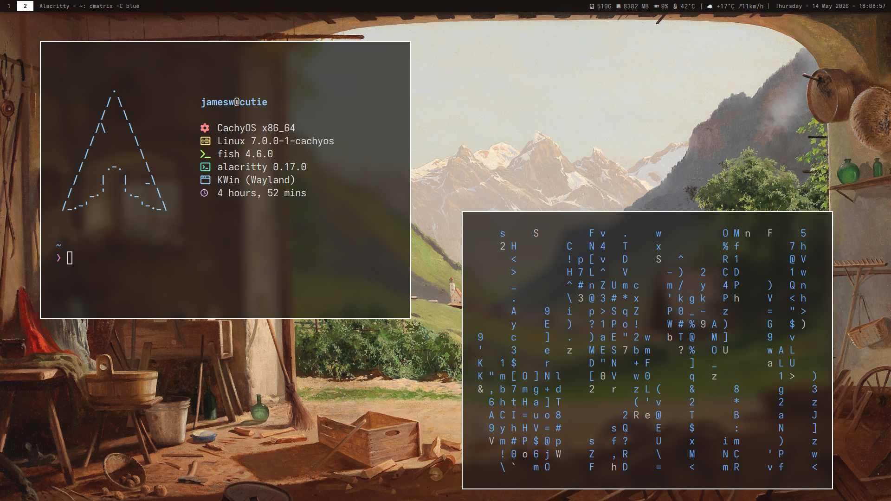
Having no window decorations and having a keybind to move and resize windows works super well for me. The wm purists might say that my hybrid is an abomination, but I don't give a fuck. My machine my rules.
While trying to recreate the look of Breads setup I could not for the life of me find a good text only system monitor and weather app so I had to make my own.
System Monitor:
↓ OBS ↓ Music ↓ SSD Space ↓ RAM Usage ↓ GPU ↓ CPU TEMP
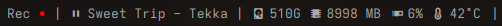
Weather:
Using wttr.in for data.
↓ Temp ↓ Wind direction
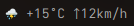
Rofi is the center piece of everything on my computer.
Mainly because it allows you to use rofi as an interface for shell scripts.
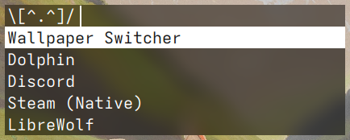
Custom scripts:
Brightness adjust, Power settings, Image Magick control, Wallpaper switcher
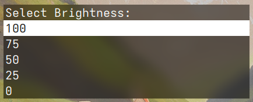
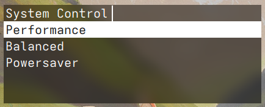
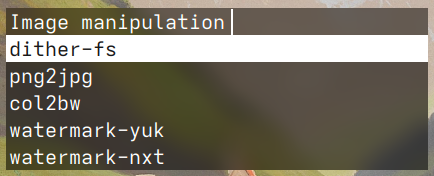
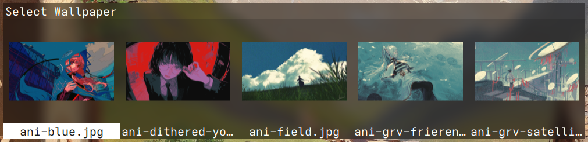
Most scripts are self explanatory, but I'd like to highlight the Imace Magick control script. This is a real time saver for me. As I you can probably see I use a lot of colour reduction and dithering and without this script I'd probably go insane.
This script allows me to bulk dither, colour reduce and scale images and it works in three steps.
1.
You can scaledown the image to deliberately lose detail for a more pixelated look.
2.
You choose how many colours the image will have.
3.
You chose the final size of the image. You should keep the original downsize or atleast double it. And the most important part is to NOT use any interpolation, that way you don't get any fuzziness and the pixels will stay sharp.
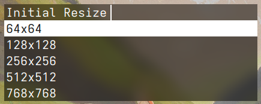
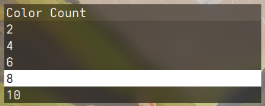
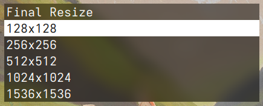